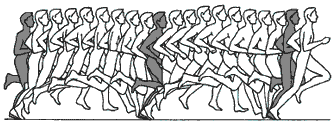
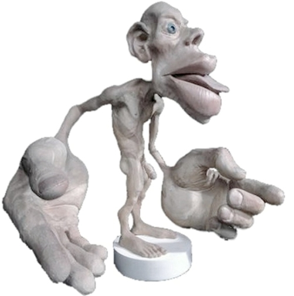

The Need for a More Sophisticated Humanoid Robot Foot
- tags: #robotics #humanoid-robot #running #bio-mechanics #ideas
Having a look around at the humanoid robots, I've noticed that they are all "flat footed". Asimo, often regarded as one of the the most sophisticated humanoid runs like this:
Don't get me wrong it is fast, but its not all that natural, it looks as if the robot is squatting and running both at the same time. But as an avid runner I would say it lacks the full running motion we would consider real running. For example, the robot doesn't actually swing its foot backwards and forwards, project itself up in the air to increase the stride length.
The challenge for the engineer is the air time, it is difficult to engineer a robot that could co-ordinate it-self to push-off with one of their legs, project itself in the air and land on the other in balance.

But why the foot?
Now the reason why I emphasised the foot, is because I believe the foot holds the key to the whole running motion. When we run we know what feels right and what doesn't, not because of the motion sensors in our ears, but perhaps from our feedback from our foot, legs, arms and body posture. To reiterate the problem of push-off and landing, the foot in my opinion is one of the most important body part that dictates the success of this phase, a flat footed robot (without sensors) is not going to help with this. And here is why:
Brain's Perception of Our Body
There is a reason why our brains perceive our hands and foot the most. That is because there is more sensory cortex devoted to these areas. This helps you make finer movements and have a better sense of touch. So the distances on your hands, thumb, and cheeks should be smaller compared to your back or your legs because they are more sensitive.

This above person is called a Homunculus. It is an interesting word. It means little man. A Canadian doctor by the name of Wilder Penfield while studying patients with epilepsy created maps of the brain.
Our Feet are Amazing!
Look at your feet, imagine how difficult it would be to run if you wore wooden slippers, compared to running on bare feet. With a single foot, there are exactly 26 bones, 33 joints (20 of which are actively articulated), and more than a hundred muscles, tendons, and ligaments. Nature has't simply done this by accident, there is a reason behind the complex structure of our foot.
Summary
In summary, through evolution we have been able to do many amazing complex things without much thought. Translating our lower motor functions to robots is one of the most difficult challenges in robotics, as Moravec (1998: 15-16) said:
"We are all prodigious Olympians in perceptual and motor areas, so good that we make the difficult look easy. Abstract thought, though, is a new trick, perhaps less than 100 thousand years old. We have not yet mastered it. It is not all that intrinsically difficult; it just seems so when we do it."
In the future, I hope to prove the above with some experimental models that prove the points above, through Genetic/Evolutionary algorithms and a 3D simulation. Further more, I hope to one day produce a real humanoid robot that can actually run! :)